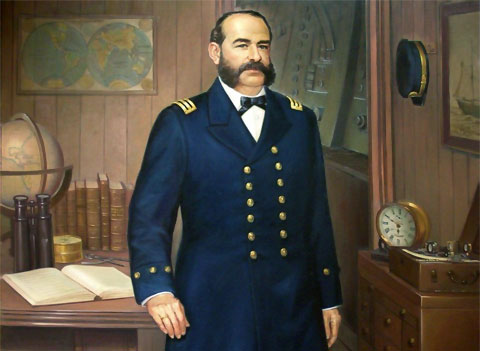

(Miguel María Grau Seminario; Paita, 1834 - Punta Angamos, 1879) Marino y militar peruano. Apasionado del mar desde la infancia, desarrolló una brillante carrera militar en la marina y llegó a ser diputado. Sus aptitudes como estratega, así como su lealtad y su heroísmo, brillaron particularmente en la Guerra del Pacífico (1879-1883), que enfrentó a Perú y Bolivia contra Chile.
